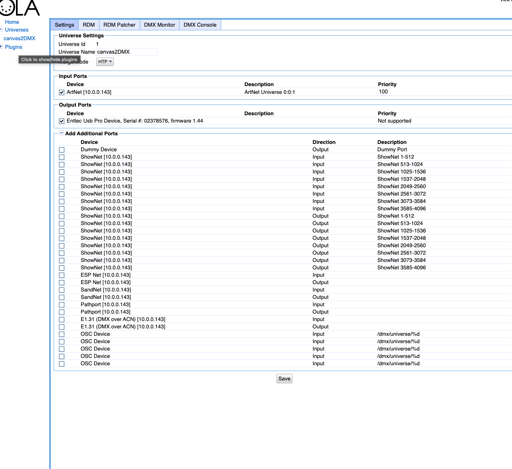
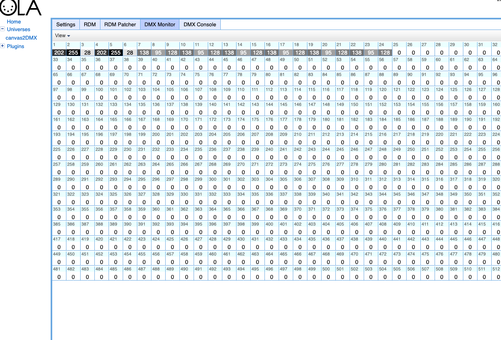

🚀 Getting Started with Canvas2DMX¶
Canvas2DMX lets you map pixels from your Processing sketch directly to DMX fixtures in real-time.
This quickstart will guide you through installation and your first test sketch.
1. Requirements¶
- Processing 4.x
- A USB DMX dongle — see the table below to find your type
- macOS / Windows / Linux
Which dongle do I have?¶
There are two families of USB DMX dongle and they need different libraries. Every example has a single flag — USE_ENTTEC_PRO — to switch between them.
| Dongle type | How to tell | Library | USE_ENTTEC_PRO |
|---|---|---|---|
| ENTTEC USB Pro (or compatible) | Has an onboard microcontroller; labeled "USB Pro", "DMX USB Pro", or "OpenDMX Pro" | dmxP512 | true |
| FT232RL "Open DMX" | Cheap transparent USB cable; "USB to DMX 512 Interface Adapter" on Amazon; FreeStyler dongle; any dongle built around an FT232RL chip | DMX4Artists | false |
| Art-Net / OLA | You have Open Lighting Architecture installed as a middleware layer | artnet4j (UDP) | use HardwareOLA |
Why two separate libraries?
The ENTTEC USB Pro has an onboard microcontroller and speaks a proprietary packet protocol — dmxP512 handles that.
Cheap FT232RL dongles are dumb USB→RS485 adapters with no microcontroller; the computer generates raw DMX timing itself — DMX4Artists does that via the FTDI driver.
They are not interchangeable: dmxP512 will not work with an FT232RL dongle, and DMX4Artists will not work with an ENTTEC Pro.
2. Installation¶
- Install both DMX libraries in Processing (all examples import both, so both must be present to compile):
- Open Processing →
Sketch→Import Library→Add Library… - Search for dmxP512 (by Daniel Bonner) and install.
- Search for DMX4Artists (by Jayson Haebich) and install.
-
You only use one at runtime, selected by the
USE_ENTTEC_PROflag in each sketch. -
Download or clone the Canvas2DMX library:
-
Copy the built library folder into your Processing libraries directory:
- Restart Processing.
You should now see Canvas2DMX listed under
Sketch → Import Library.
3. Your First Sketch¶
Open the Basics example (File → Examples → Contributed Libraries → Canvas2DMX → Basics) and update the config block at the top to match your setup:
import com.studiojordanshaw.canvas2dmx.*;
import dmxP512.*;
import processing.serial.*;
import com.jaysonh.dmx4artists.*;
// ── Configure these for your setup ──────────────────────────────────────────
//
// USE_ENTTEC_PRO — which dongle type are you using?
// true → ENTTEC USB Pro — uses dmxP512 library, connects via DMX_PORT
// false → FT232RL cheap dongle — uses DMX4Artists, auto-detected by USB index
//
boolean USE_ENTTEC_PRO = true;
// DMX_PORT — serial port for ENTTEC Pro (only used when USE_ENTTEC_PRO=true).
// To list all ports: add println(Serial.list()); to setup() and run.
// Mac: /dev/cu.usbserial-XXXXXXXX Windows: COM3 Linux: /dev/ttyUSB0
String DMX_PORT = "/dev/cu.usbserial-XXXXXXXX"; // ← change this
int DMX_BAUDRATE = 115000; // ENTTEC Pro baud rate — do not change
int DMX_UNIVERSE = 512; // full DMX universe; max 512 channels
// DMX_OFFSET — channel correction for dmxP512 (only used when USE_ENTTEC_PRO=true).
// 1 = standard for ENTTEC Pro | 0 = if channels arrive one step too high
int DMX_OFFSET = 1;
// DMX_CHANNEL_PATTERN — must match your fixture’s channel map (check its manual).
// d=dimmer r=red g=green b=blue w=white s=strobe c=color change macro
// Common: "rgb" "grb" "drgb" "drgbsc" "rgbw"
String DMX_CHANNEL_PATTERN = "drgb"; // ← change this to match your fixture
// ────────────────────────────────────────────────────────────────────────────
Canvas2DMX c2d;
DmxP512 dmxPro; // used when USE_ENTTEC_PRO = true
DMXControl dmxOpen; // used when USE_ENTTEC_PRO = false
void settings() { size(320, 220); pixelDensity(1); }
void setup() {
if (USE_ENTTEC_PRO) {
dmxPro = new DmxP512(this, DMX_UNIVERSE, false);
dmxPro.setupDmxPro(DMX_PORT, DMX_BAUDRATE);
} else {
dmxOpen = new DMXControl(0, DMX_UNIVERSE); // 0 = first detected FT232RL device
}
c2d = new Canvas2DMX(this);
c2d.setChannelPattern(DMX_CHANNEL_PATTERN);
c2d.setDefaultValue(‘d’, 255);
c2d.setStartAt(1);
c2d.setLed(0, width/2, height/2);
}
void draw() {
background(frameCount % 255, 100, 200);
int[] colors = c2d.getLedColors();
c2d.visualize(colors);
c2d.showLedLocations();
sendDmx();
}
// sendDmx() — branches on USE_ENTTEC_PRO to call the right library.
// This pattern is used in all Canvas2DMX examples.
void sendDmx() {
if (USE_ENTTEC_PRO) {
c2d.sendToDmx((ch, val) -> dmxPro.set(ch + DMX_OFFSET - 1, val));
} else {
c2d.sendToDmx((ch, val) -> dmxOpen.sendValue(ch, val));
}
}
Run the sketch — you’ll see LED markers drawn over your canvas and a color swatch strip at the bottom. If your dongle is connected and configured correctly, the fixture will respond immediately.
Finding your serial port (ENTTEC Pro)¶
Add this line to setup(), run the sketch, and check the Processing console:
On macOS the ENTTEC Pro typically appears as /dev/cu.usbserial-XXXXXXXX. Use the cu. prefix — not tty. — for outgoing serial connections.
4. Configuration Methods¶
Canvas2DMX provides several methods to configure how colors are sampled and sent to DMX:
Canvas Size (Off-Screen Buffers)¶
Set custom canvas dimensions for LED mapping. Use this when sampling from a PGraphics buffer that has different dimensions than your sketch window. By default, Canvas2DMX uses the sketch's width and height.
Channel Pattern¶
c2d.setChannelPattern("drgb"); // dimmer + RGB
c2d.setChannelPattern("rgb"); // just RGB (default)
c2d.setChannelPattern("rgbw"); // RGB + white
Default Values¶
Response Curve¶
5. Working with Off-Screen Buffers¶
For advanced workflows, you can sample from a PGraphics buffer instead of the main canvas. This is useful when you want to keep LED mapping resolution independent from display resolution.
import com.studiojordanshaw.canvas2dmx.*;
Canvas2DMX c2d;
PGraphics ledBuffer;
void setup() {
size(800, 600);
// Create a smaller buffer for LED sampling
ledBuffer = createGraphics(100, 100);
c2d = new Canvas2DMX(this);
// IMPORTANT: Tell Canvas2DMX the buffer dimensions
c2d.setCanvasSize(100, 100);
// Map LEDs relative to buffer coordinates
c2d.mapLedStrip(0, 10, 50, 50, 8, 0, false);
}
void draw() {
// Draw to the off-screen buffer
ledBuffer.beginDraw();
ledBuffer.background(0);
ledBuffer.fill(255, 100, 0);
ledBuffer.ellipse(
map(mouseX, 0, width, 0, 100),
map(mouseY, 0, height, 0, 100),
30, 30
);
ledBuffer.endDraw();
// Display buffer scaled up to window
image(ledBuffer, 0, 0, width, height);
// Sample from the buffer's pixels
ledBuffer.loadPixels();
int[] colors = c2d.getLedColors(ledBuffer.pixels);
c2d.visualize(colors);
}
Key Points¶
- Call
setCanvasSize()before mapping LEDs - LED coordinates should be relative to the buffer size, not the window size
- Use
getLedColors(buffer.pixels)to sample from the buffer - Don't forget to call
buffer.loadPixels()before sampling
6. Using OLA (Open Lighting Architecture)¶
OLA is middleware that sits between Processing and your USB dongle. Instead of talking to the dongle directly, your sketch sends Art-Net UDP packets to OLA on localhost — OLA then drives whatever hardware is patched to that universe. This means you can swap dongles without changing a line of code.
Works with: ENTTEC USB Pro, FT232RL Open DMX, and most other dongles.
Setup¶
Then open http://localhost:9090 in a browser:
- Click Add Universe, set Universe ID to
1, name it anything (e.g.canvas2DMX) - Under Input Ports, tick ArtNet — it will show
ArtNet Universe 0:0:1 - Under Output Ports, tick your USB dongle (e.g.
Enttec Usb Pro Device) - Click Save

Running the HardwareOLA example¶
Open File → Examples → Canvas2DMX → HardwareOLA and set:
int ART_NET_UNIVERSE = 1; // match the Universe ID you created above
String DMX_CHANNEL_PATTERN = "grb"; // SP201E / WS2812/WS2815 raw strip
float DMX_RESPONSE = 2.6; // gamma for linear LED chips
Run the sketch. Check the DMX Monitor tab in OLA — you should see live channel values updating as the animation runs:

Channels 1–24 show active GRB values for the 8-LED ring (3 channels × 8 LEDs). Everything above channel 24 stays at 0 — clean output with no leakage into unused channels.
Why use OLA?¶
| Direct (dmxP512 / DMX4Artists) | Via OLA |
|---|---|
| One library per dongle type | Any dongle, same sketch |
| Serial port string in code | No port config needed |
| Swap dongle → change code | Swap dongle → repatch in browser |
| Works offline, no daemon | Requires olad running |
SP201E note: the SP201E maps DMX channels directly to LED colour data, 3 channels per LED, with no dimmer or strobe channels. Always use
"grb"or"rgb"— never"drgb"or"drgbsc"— otherwise the dimmer value shifts every LED's colour data and the strip outputs black.
7. Next Steps¶
Try the examples included with the library:
Basics— the smallest possible sampling sketchStripMapping— linear layouts and DMX frame previewOffscreenBuffer—PGraphicsworkflows withsetCanvasSize()PolygonMapping— arbitrary shapes and fill orderingInteractiveDemo— live fixture-pattern exploration
Check out:
- Advanced Features for packaging and release steps
- Troubleshooting if your DMX isn’t working
✅ That’s it! You’re ready to build interactive Processing sketches that control DMX lighting in real time.
📚 Learn More¶
- Canvas2DMX — repo link
- Getting Started — installation and first sketch
- Troubleshooting — common issues and fixes
- Develop — contributing and building from source
- Release — packaging and Contribution Manager
📜 License¶
MIT License © 2025 Studio Jordan Shaw